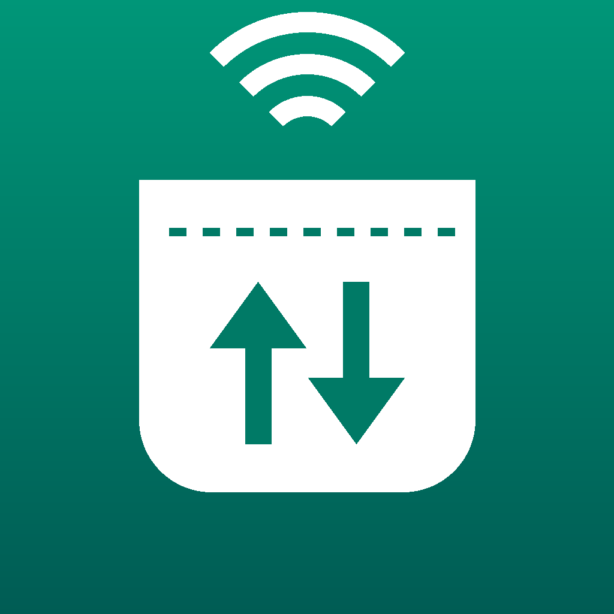

Pocket Proxy
Use your iPhone's cellular data from your computer.
Pocket Proxy runs a SOCKS5 proxy on your iPhone. Your computer connects to it over the USB cable (with the free iproxy tool) or over Wi-Fi, and its traffic goes out through the iPhone's cellular data connection.
It's useful for testing how a website or API behaves on a real mobile network, or for sending one tool on your computer through the phone's connection while everything else stays on your usual network.